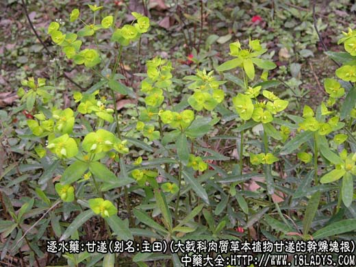
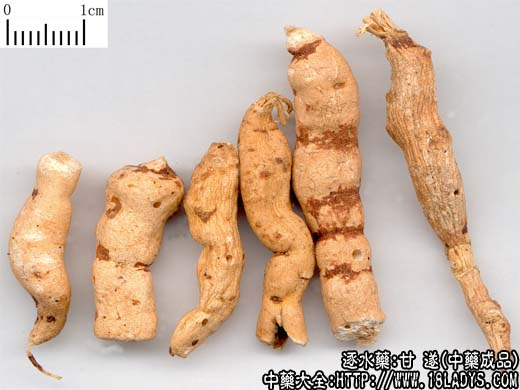
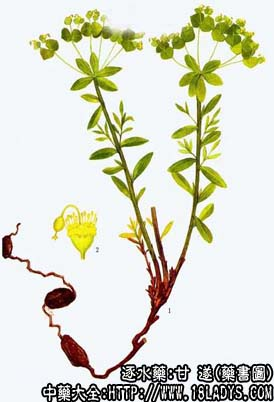

甘遂为较常用中药。《神农本草经》列为下品。
别名：主田、重泽、甘藁、陵藁、甘泽、苦泽、白泽、鬼丑、陵泽、肿手花根、九头狮子草、化骨丹、肿手花、头痛花、猫儿眼。
来源：为大戟科多年生肉质草本植物甘遂的干燥块根。
产地：主产于陕西渭南、三原、甘肃天水、河南洛阳等地。此外湖北、山西亦产。
性状鉴别：块根连珠状，纺锤形或不规则棒状，长约2～6厘米，直径约0.5～1.5厘米，表面洁白或黄白色（已撞去外栓皮）。未去净外栓皮处显棕色斑点。陈久则变红黄。质硬，易折断。断面粉性，皮部色白，约占半径的1/2，木质部浅黄色。粉性足者用水浸湿后木质部显黄色。味微甘辛，有持久刺激性。
以肥大饱满、色白、粉性足者为佳。
主要成分：含三萜成分，包括d-大戟醇、r-大戟甾醇等。
功效与作用：1、泻下：甘遂的致泻成分对肠粘膜有强烈刺激，引起炎症性充血和蠕动等，造成峻泻/副作用大，有恶心、呕吐、腹痛、头晕、心悸、血压下降，有时令病人难以忍受，应慎用。
2、利尿。
炮制：醋制。
性味：苦寒，有毒。
归经：入肾、肺、大肠经。
功能：泻水遂肿，消肿散结。
主治：水肿胀满，痰饮积聚。
附：反甘草。
临床应用：1、主要用于攻遂胸腹积水，见证与应用牵牛子相同，只用于气壮实邪者。
1、用于治疗肝硬化腹水。配人参（或党参）、虫笋尖、黑牵牛、沉香、肉桂等遂水药和益气行气药，消肿效果不错。
2、用于治疗渗出性胸膜炎所致胸水，急性期如兼有实热症状：潮热、协痛、便秘、口燥而渴、心烦，属"结胸"证，单用甘遂效力不够，须配大黄、元明粉，方如大陷胸汤。
3、用于治疗肾炎水肿（急、慢性肾炎均可）。甘遂6g，研末，放入雄猪腰（肾）中，其外以竹纸包裹，用水沾湿竹纸，然后以火煨之，煨熟后把猪腰切成7片，每天服1片，旺旺服4～5片后便开始消肿。
使用注意：1、孕妇忌用，一般服后病愈即予停服；2、宜用煨甘遂，或用醋制过者，因煨过后可减少其呕吐等副作用。又经醋酸作用后，可减少甘遂的毒性刺激作用。生甘遂毒性和泻下作用均较强，不宜应用；3、甘遂和芫花、大戟，传统经验忌与甘草配伍，但现代的初步实验结果还很不一致。有些报道指出，据家兔试验，甘遂（或芫花、大戟）配甘草，服后呼吸、心跳、体温、瞳孔反应、胃肠功能并没有产生特别的变化，但另一些实验则证明了甘遂与甘草配伍随用量比例的不同而有不同的反应。
用量多作丸散用，粉剂每次0.3～0.6g，最多0.9～1.5g装入胶囊内吞服，否则易发生恶心、呕吐。也可用水煎（常用量1.5～3g），但效果一般不理想，有时用到4～12g也不一定有泻下作用。现代实验已证实甘遂的有效成分难溶于水，故前人不以甘遂汤剂是有科学根据的。
处方举例：大陷胸汤（《伤寒论》）：大黄9g、元明粉15g、煨甘遂0.9g（研末装入胶囊），先煮大黄，后下元明粉，煮一、二沸后，送服甘遂末。